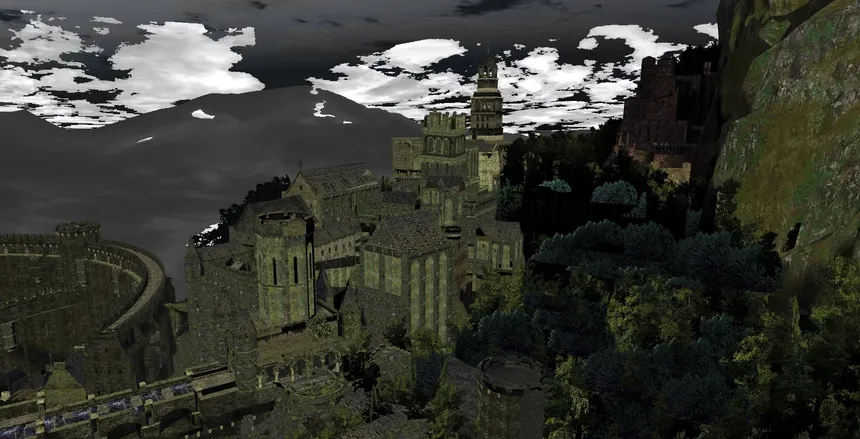
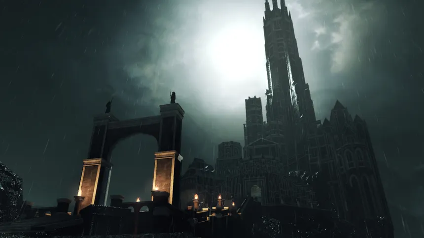

DARK SOULS I
Lordran
Una terra antiga on els déus van establir el seu regne. La Primera Flama manté l'equilibri entre la llum i la foscor, però el seu poder comença a minvar.
TRES REGNES CAIGUTS
cada regne conserva les seves pròpies ruïnes, secrets i llegendes.

DARK SOULS I
Una terra antiga on els déus van establir el seu regne. La Primera Flama manté l'equilibri entre la llum i la foscor, però el seu poder comença a minvar.

DARK SOULS II
Un regne construït sobre les restes d'altres civilitzacions. La maledicció dels no morts continua estenent-se i el passat sembla repetir-se.

DARK SOULS III
Un regne on els cicles de la flama arriben al seu límit. Les terres i els seus habitants s'uneixen en un món que sembla estar a punt d'acabar.
FRAGMENTS DEL VIATGE
Selecciona una imatge per veure-la ampliada.